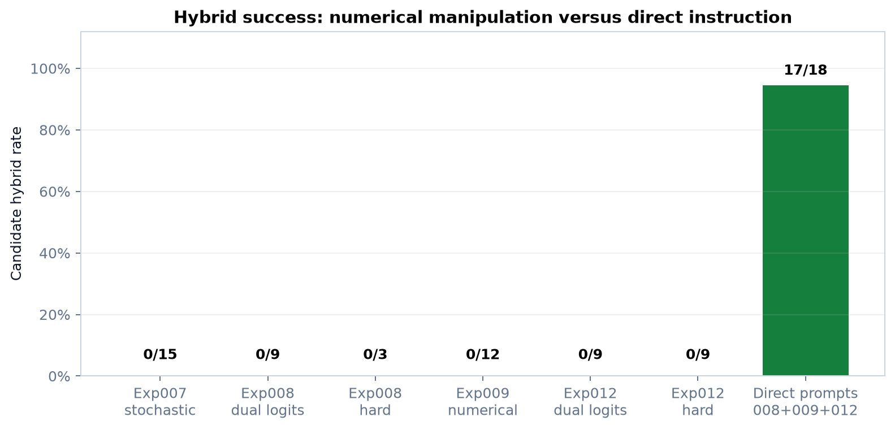

Executive summary
Endpoint-valid aggregate: 0/42 numerical hybrids versus 17/18 strict direct-prompt hybrids.
The bounded pilot result now spans sorting, dense matrix multiplication, sparse graph BFS, and image normalization. It does not show that all diffusion methods fail. It shows that the tested final-canvas arithmetic interpolation, hard projection, stochastic top-k projection, and per-step linear output-logit mixing did not provide a useful semantic composition coordinate.
Full-context blank-canvas follow-up
Experiment 013 implemented Sergiy's follow-up suggestion by placing both complete frozen parent records in one prompt and supplying no parent-derived canvas state. It produced 8/9 strict hybrids, exactly tying Experiment 012's concise direct-prompt baseline at 8/9. Matrix remained 3/3, graph improved to 3/3, and image declined to 2/3 because one output omitted order preservation.
The ninth output still combined fixed-size batching, memory capping, NumPy broadcasting, and float32, but the preregistered strict outcome remains a failure. The follow-up supports prompt-only blank-canvas synthesis as a viable baseline; it does not improve aggregate reliability or rehabilitate numerical mixing.
Research question and operational definition
Can prompt-conditioned numerical representations from two optimization ideas be combined so DiffusionGemma generates one coherent idea retaining both parents?
A candidate hybrid had to satisfy the experiment-specific lexical groups for Parent A and Parent B and avoid prohibited operations. Endpoint gates prevented interpretation when the model could not first reproduce both parents.
System and provenance
Where recorded, the full-model runs used google/diffusiongemma-26B-A4B-it, model revisions f7f5b7f5fa82ffc52addd066915886d497f5517b, and an NVIDIA GeForce RTX 5090. Exact settings, seeds, hashes, timestamps, and runtime details remain in each raw manifest.
The partial-denoising and autoregressive handoff status comes from an earlier unnumbered September 16 pilot, read at build time from: deliverables/evidence/prior-pilot/partial-scaffolds-20260916/results.json, deliverables/evidence/prior-pilot/partial-scaffolds-20260916/assessment.json, deliverables/evidence/prior-pilot/scaffold-handoff-20260916/results.json, and deliverables/evidence/prior-pilot/scaffold-handoff-20260916/assessment.json.
| Exp | Directory | Status | Repository revision | Model | Manifest read at build |
|---|---|---|---|---|---|
| 001 | 001-code-state-controls | completed | not recorded in manifest | google/diffusiongemma-26B-A4B-it | experiments/001-code-state-controls/results/results.json |
| 002 | 002-prompt-state-controls | completed | not recorded in manifest | google/diffusiongemma-26B-A4B-it | experiments/002-prompt-state-controls/results/results.json |
| 003 | 003-prompt-specificity-diagnostic | completed | not recorded in manifest | google/diffusiongemma-26B-A4B-it | experiments/003-prompt-specificity-diagnostic/results/results.json |
| 004 | 004-controlled-prompt-weight-sweep | completed | not recorded in manifest | google/diffusiongemma-26B-A4B-it | experiments/004-controlled-prompt-weight-sweep/results/results.json |
| 005 | 005-projection-geometry-diagnostic | completed | f8cbfc8af5f19491819e7a1e23913fa83a381b75 | google/diffusiongemma-26B-A4B-it | experiments/005-projection-geometry-diagnostic/results/results.json |
| 006 | 006-top-candidate-projection | completed | 19bb78035029161826f535d8b5a920ea14ac391a | google/diffusiongemma-26B-A4B-it | experiments/006-top-candidate-projection/results/results.json |
| 007 | 007-stochastic-projection | completed | aa92b5fb392a58afb4e19076b9ee51953ac1bcf3 | google/diffusiongemma-26B-A4B-it | experiments/007-stochastic-projection/results/results.json |
| 008 | 008-dual-prompt-logit-mixing | completed | c68f4a488c450bfc522648d78e8eee177d161dd4 | google/diffusiongemma-26B-A4B-it | experiments/008-dual-prompt-logit-mixing/results/results.json |
| 009 | 009-multi-pair-replication | completed_with_blocked_pairs | 67385d77893a42686a836e3bef027ec2d7213686 | google/diffusiongemma-26B-A4B-it | experiments/009-multi-pair-replication/results/results.json |
| 010 | 010-histogram-endpoint-specificity | completed | ef4087432827231f9be40afc867ca5979785571a | google/diffusiongemma-26B-A4B-it | experiments/010-histogram-endpoint-specificity/results/results.json |
| 011 | 011-nonsorting-endpoint-screen | completed | 198c2aa69cb06a2cd3364751418b2bd5aeaaf364 | google/diffusiongemma-26B-A4B-it | experiments/011-nonsorting-endpoint-screen/results/results.json |
| 012 | 012-nonsorting-composition | completed | e897394bcd791cfc27351b9b34c6ab2b2c53fde6 | google/diffusiongemma-26B-A4B-it | experiments/012-nonsorting-composition/results/results.json |
| 013 | 013-full-context-blank-canvas | completed | 42974f67b77e03de3be57a8bab4fcb553d1da6f1 | google/diffusiongemma-26B-A4B-it | experiments/013-full-context-blank-canvas/results/results.json |
Experiment ladder
Experiment 001: Code State Controls
Question. Can the original mean-idea pipeline preserve each source program when both inputs are identical, and what changes when the two different programs are combined?
Finding. Both parent techniques were recognizable in controls, but all three generated programs were syntactically invalid; the mixed code state did not combine them.
Evidence: experiments/001-code-state-controls/results/results.json
Experiment 002: Prompt State Controls
Question. With identical empty source canvases, can each idea-specific prompt control the generated idea independently, and does the entropy-weighted mixed state preserve both prompt-specific techniques?
Finding. Prompt-state controls produced coherent ideas, but Parent B lost its NumPy/bincount/repeat specificity, so this was not yet a valid mixing test.
Evidence: experiments/002-prompt-state-controls/results/results.json
Experiment 003: Prompt Specificity Diagnostic
Question. Does Source B specificity disappear in the initial vocabulary projection, during diffusion denoising, or because the final decoder does not directly receive the source prompt?
Finding. Explicit source wording restored NumPy, bincount, and repeat from 1 through 8 denoising steps. Prompt specificity was therefore a critical control.
Evidence: experiments/003-prompt-specificity-diagnostic/results/results.json
Experiment 004: Controlled Prompt Weight Sweep
Question. Does a controlled arithmetic interpolation between a bounded counting-sort prompt state and a Numba-compilation prompt state produce a repeatable idea that preserves both techniques?
Finding. Both endpoints passed. Across 27 intermediate runs, 0 hybrids appeared; outputs occupied A-like, unrelated, and B-like regions.
Evidence: experiments/004-controlled-prompt-weight-sweep/results/results.json
Experiment 005: Projection Geometry Diagnostic
Question. Is the off-source midpoint observed in Experiment 004 already present when the continuous interpolated state is independently projected to vocabulary tokens, or is it created during diffusion denoising?
Finding. Global cosine was 0.542; no position had negative cosine; midpoint norm retention was 87.8%. Simple cancellation was not the explanation.
Evidence: experiments/005-projection-geometry-diagnostic/results/results.json
Experiment 006: Top Candidate Projection
Question. At the failed arithmetic midpoint, do the endpoint projection tokens remain highly ranked alternatives below top-1, or has the final-state vocabulary distribution already lost them?
Finding. At the midpoint, both endpoint token alternatives were present in top-20 at 95.0% of endpoint-distinct positions, but never together at top-1. Hard projection assembled a patchwork.
Evidence: experiments/006-top-candidate-projection/results/results.json
Experiment 007: Stochastic Projection
Question. Can a stochastic top-20 projection retain and coordinate parent alternatives better than independent hard top-1 projection at the arithmetic midpoint?
Finding. Endpoint controls passed at all temperatures. Stochastic top-20 projection produced 0/15 midpoint hybrids.
Evidence: experiments/007-stochastic-projection/results/results.json
Experiment 008: Dual Prompt Logit Mixing
Question. Can jointly supplying both source prompts through weighted logits at every denoising step produce a coherent counting-sort plus Numba optimization idea?
Finding. Endpoints passed. Dual-logit intermediates: 0/9; hard midpoint: 0/3; direct diffusion prompts: 3/3.
Evidence: experiments/008-dual-prompt-logit-mixing/results/results.json
Experiment 009: Multi Pair Replication
Question. Do the midpoint failure of final-state and per-step linear-logit mixing, and the success of direct textual combination, replicate across additional idea pairs and a non-sorting workload?
Finding. 2 sorting pairs passed endpoint gates and one histogram pair was blocked. Numerical midpoints: 0/12; direct prompts: 6/6.
Evidence: experiments/009-multi-pair-replication/results/results.json
Experiment 010: Histogram Endpoint Specificity
Question. Can explicit process-ownership wording recover the frozen multiprocessing chunk-and-sum byte-histogram endpoint reliably enough for a controlled non-sorting midpoint experiment?
Finding. Deterministic reproduction passed 3/3. Strengthened A passed 1/3 and B 0/3, so no midpoint test was admissible.
Evidence: experiments/010-histogram-endpoint-specificity/results/results.json
Experiment 011: Nonsorting Endpoint Screen
Question. Which jointly frozen public non-sorting optimization pairs have two reliable source endpoints under the same prompt-conditioned DiffusionGemma interface?
Finding. 3/4 nonsorting pairs passed both endpoint gates: matrix multiplication, graph BFS, and image normalization. The regex pair was blocked.
Evidence: experiments/011-nonsorting-endpoint-screen/results/results.json
Experiment 012: Nonsorting Composition
Question. Do final-state hard projection and per-step linear-logit midpoint failures replicate on endpoint-valid non-sorting optimization pairs, relative to direct textual combination?
Finding. All 27 frozen runs completed. Dual-logit midpoint: 0/9; hard midpoint: 0/9; direct prompting: 8/9 strict hybrids.
Evidence: experiments/012-nonsorting-composition/results/results.json
Experiment 013: Full Context Blank Canvas
Question. When all available frozen context for both parent techniques is placed in one prompt and no parent-derived canvas state is supplied, does DiffusionGemma produce a coherent idea retaining both techniques?
Finding. Full-context blank-canvas prompting produced 8/9 strict hybrids, tying the frozen concise-prompt baseline at 8/9. Graph improved while image exactness declined.
Evidence: experiments/013-full-context-blank-canvas/results/results.json
Aggregate plots

The sweep directly counts raw retains_A, retains_B, and candidate_hybrid fields.

Positive cosine and retained norm argue against cancellation.

Both alternatives often exist below top-1, but hard independent projection cannot preserve sequence-level meaning.

Numerical methods produced 0/42 strict hybrids while direct prompts produced 17/18 across four workloads.
Representative raw-output excerpts
These excerpts are loaded from raw text files during each build; they are not cached evidence.
Exp001 mixed code state
thought import time def my_sort(arr): """ Implementation of a custom sort algorithm based on the logic logic """ if not arr: return arr low = min(arr) high = max(arr) range = high - low # Using a counting approach for O(n + k) where k is the range # This is faster than comparison-based log for for small ranges count = [0] * (range + 1) for x in arr: count[x…experiments/001-code-state-controls/results/a-b-mixture.txt
Exp003 explicit parent recovery
thought To optimize `my_sort` for bounded integer data, use `numpy.bincount` to count frequencies and then use `numpy.repeat` to reconstruct the sorted array.experiments/003-prompt-specificity-diagnostic/results/explicit-source-only-steps-8.txt
Exp004 midpoint
thought Implement a merge-sort using an auxiliary buffer to reduce the overhead of list slicing and concatenation during the recursive merge steps.experiments/004-controlled-prompt-weight-sweep/results/weight-0p5-seed-42.txt
Exp007 stochastic midpoint
thought Implement a counting-sort-based frequency array to reduce time complexity from $O(n \log n)$ to $O(n + k)$ for integer inputs.experiments/007-stochastic-projection/results/temperature-1-weight-0p5-seed-42-denoised.txt
Exp008 numerical midpoint
thought Optimize `my_sort` by implementing a ** ** sort** using a **fixed** array** of ** ** the- ** ** ** to ** ** the the the the the the the the the the the theexperiments/008-dual-prompt-logit-mixing/results/weight-0p5-seed-42-denoised.txt
Exp008 direct prompt
thought Implement `my_sort` using a Numba `@njit` decorated function that performs a bounded counting sort by utilizing a fixed-size NumPy array of length 10000 to store frequencies of integers 0-9999, then reconstructing the sorted array in a single passexperiments/008-dual-prompt-logit-mixing/results/direct-prompt-seed-42.txt
Exp009 numerical midpoint
thought Optimize `my_sort` by implementing a specialized path for bounded- integers that uses `numpy.bincount` to count frequencies and `np.repeat` to reconstruct the sorted sequence, ensuring a high-performance alternative to the general-.experiments/009-multi-pair-replication/results/pair-fast-path-fallback/dual-weight-0p5-seed-42-denoised.txt
Exp009 direct prompt
thought Implement `my_sort` as a hybrid strategy that first checks if the input consists of bounded nonnegative integers to trigger a fast-path using `np.bincount` to count frequencies and `np.repeat` to reconstruct the sorted array; otherwise, fall back to a general-purpose heap sort using `heapq.heapify` to build a min-heap and `heapq.heappop` to extract…experiments/009-multi-pair-replication/results/pair-fast-path-fallback/direct-prompt-seed-42.txt
Exp011 matrix endpoint A
thought Replace the Python triple element loops with the `np.matmul` function or the `@` operator to delegate the computation to highly optimized BLAS-backed NumPy kernels.experiments/011-nonsorting-endpoint-screen/results/matrix-blocked-blas/dual-weight-0p0-seed-42-denoised.txt
Exp011 matrix endpoint B
thought To improve cache locality, use Numba's JIT compilation to implement the blocked multiplication logic, ensuring the nested loops process tiles that fit entirely within the L1/L2 cache to accumulate exactly into the output matrix while minimizing Python overhead.experiments/011-nonsorting-endpoint-screen/results/matrix-blocked-blas/dual-weight-1p0-seed-42-denoised.txt
Exp012 numerical midpoint
thought Replace the nested Python triple loops with the `np.matmul` function or the `@` operator to leverage optimized BLAS kernels for the matrix multiplication.experiments/012-nonsorting-composition/results/matrix-blocked-blas/dual-weight-0p5-seed-42-denoised.txt
Exp012 direct matrix prompt
thought To optimize large dense matrix multiplication, implement a blocked tiling strategy that partitions input matrices into sub-blocks fitting within the L1/L2 cache, then use `np.matmul` to compute and accumulate the products of these compatible tiles to maximize cache locality while leveraging high-performance BLAS-backed kernels.experiments/012-nonsorting-composition/results/matrix-blocked-blas/direct-prompt-seed-42.txt
Exp012 graph strict-gate failure
thought Implement a BFS that utilizes a `collections.deque` to manage the frontier via atomic `popleft()` and `append()` operations, while accelerating neighbor discovery by accessing contiguous slices of a CSR `indices` and ` `ptr` array to maximize cache locality and minimize pointer overhead.experiments/012-nonsorting-composition/results/graph-csr-deque-bfs/direct-prompt-seed-43.txt
Exp013 full-context graph success
thought Optimize breadth-first search over a large sparse graph by using a CSR adjacency representation to store contiguous neighbors in indices and indptr arrays for cache-efficient access, while managing the BFS queue with a collections.deque to utilize popleft and append for constant-time operations.experiments/013-full-context-blank-canvas/results/graph-csr-deque-bfs/full-context-seed-42.txt
Exp013 image strict-gate failure
thought Normalize the collection by processing images in fixed batch sizes to cap peak memory, where each batch is cast to float32 and normalized using NumPy broadcasting with mean and standard-deviation arrays to ensure no pixel loops.experiments/013-full-context-blank-canvas/results/image-batched-vectorization/full-context-seed-44.txt
Sergiy’s explicit proposal items and their status
This table attributes the original requested directions separately from later ideas developed by the project team.
| Explicitly proposed/requested item | Evidence-based status |
|---|---|
| Mix prompt/internal representations from blank output canvases. | Tested negative for the implemented final-state methods. Endpoints decoded, but final-state interpolation/projection and linear output-logit mixing produced 0/42 strict hybrids across endpoint-valid pairs. |
| Use Darwin optimization ideas and programs. | Partly executed. Darwin-derived optimization ideas drove the sorting studies, and code-state controls were attempted, but no mixed output established a useful optimized program or Darwin fitness gain. |
| Stop denoising early, then ask a larger autoregressive model to complete the scaffold. | Tested in the earlier pilot; no useful information was added. 0/15 partial outputs were useful. Scaffold-only handoff recovered neither parent in 0/4; parents plus scaffold succeeded 4/4, but parents-only had already succeeded 3/3. |
| Use Bayesian optimization in representation space. | Not justified. The tested coordinate crosses broad unrelated regions rather than a smooth, useful semantic bridge. |
| Eventually integrate a synthesis/search stage into Darwin for code optimization. | Not justified for the failed numerical mechanism. Direct text-based idea synthesis remains viable as a simpler candidate, but program-level Darwin implementation and benchmarking remain untested. |
Our later future-work ideas—not Sergiy’s explicit asks
- Internal transformer-layer injection.
- Prompt KV-cache mixing.
- Learned sequence-aware mixing or steering.
- A preregistered confirmatory study with held-out pairs, blinded evaluation, and program benchmarks.
What was not completed—and why
These were downstream implementation aspirations in the proposal, contingent on the research mechanism first passing scientific gates. Their omission is a documented decision, not forgotten work.
- No production Darwin sampling-stage integration: the tested numerical synthesis mechanism showed no benefit, so production integration was not scientifically justified.
- No Bayesian optimizer run: the smooth-coordinate gate failed; the tested path crossed a broad unrelated region rather than a useful continuous space.
- No end-to-end generated-program compilation, test, and benchmark campaign: the numerical method produced no useful synthesized idea to advance, and the initial code controls were invalid.
The underlying questions—whether the tested representations compose, whether partial handoff helps, whether optimization is justified, and whether this mechanism merits Darwin integration—were nevertheless addressed.
Limitations and scope
- All results are exploratory/pilot and were not preregistered confirmatory evidence.
- The strongest comparison spans endpoint-valid sorting, matrix multiplication, graph BFS, and image-normalization pairs; Experiment 009's histogram pair and Experiment 011's regex pair were blocked by endpoint controls.
- Experiment 012's graph seed 43 was a strict automated-gate failure because
indptrwas damaged to` `ptr, although the intended deque-plus-CSR combination was human-identifiable. - Experiment 013 tied rather than exceeded the concise prompt baseline. Its image seed 44 output combined the core vectorization and batching techniques but omitted the frozen output-order requirement.
- Automated lexical indicators are transparent and reproducible but do not replace blinded human evaluation, code implementation, tests, benchmarks, or uncertainty estimates.
- The conclusion is bounded to the exact model revision, representations, projection/injection points, prompts, seeds, canvases, and workloads tested.
- Internal transformer-layer injection, KV-cache mixing, learned sequence-aware methods, and preregistered confirmation are later project-proposed future work, not Sergiy’s explicit asks. The negative result is specifically bounded to final-state interpolation/projection and linear output-logit mixing.
Our recommended future work
These are later project recommendations, not additional items attributed to Sergiy’s original proposal.
- Freeze a paper-grade confirmatory protocol, held-out pairs, exclusions, outcome rules, run counts, and blinded evaluation.
- Use the sorting and nonsorting results to define a multi-workload confirmatory corpus without converting these pilot runs into confirmatory evidence.
- Test a technically distinct sequence-aware mechanism: internal-layer or KV-cache intervention with preserved token alignment.
- Keep direct diffusion prompting and autoregressive combination as strong baselines.
- Only revisit Bayesian optimization after demonstrating a smooth, controllable, useful low-dimensional coordinate.